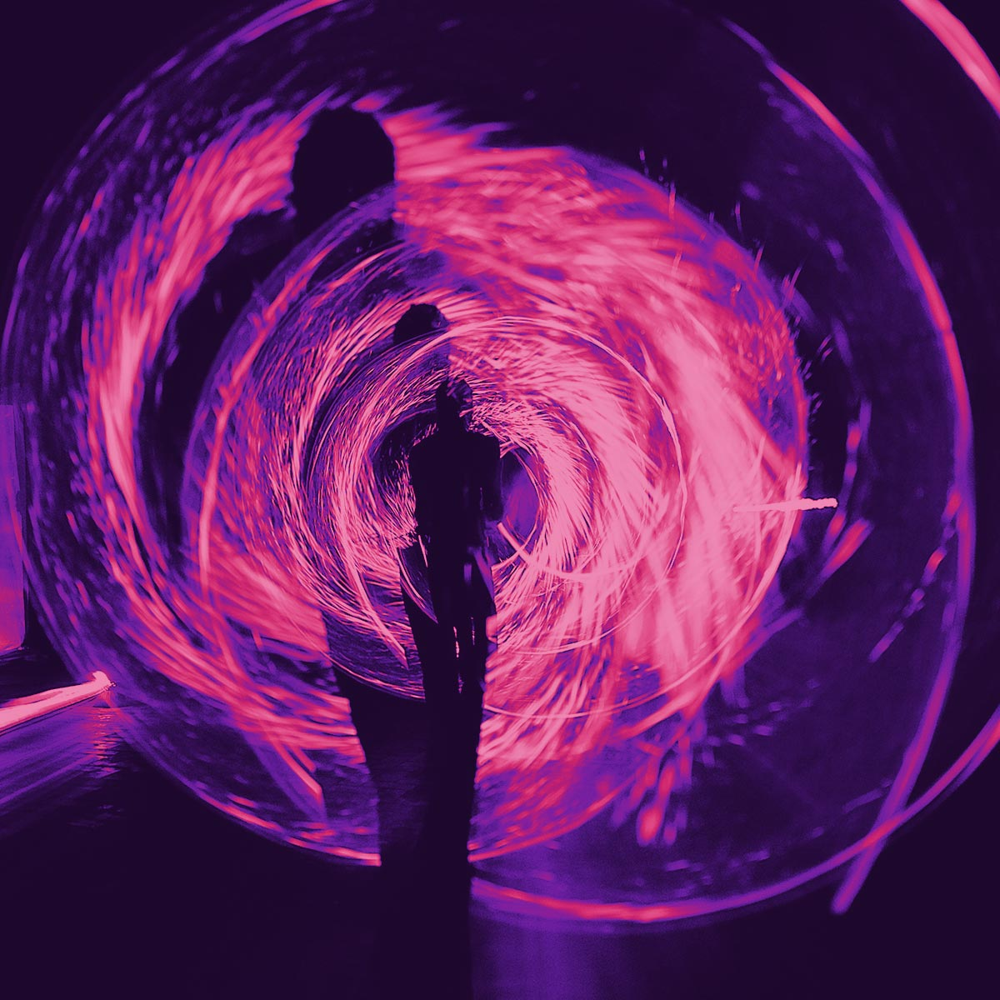

×CHIUDI
QUALI CONFINI
"E tu come lo chiami un mondo senza limiti territoriali? Non siamo ancora esseri umani oltre i confini nazionali? E nei viaggi interstellari? Siamo ancora esseri umani anche oltre i confini dei nostri tessuti epiteliali? Quali confini per il nuovo mondo?"
1
POPOLI
Il confine di uno Stato coinciderà con il confine di uno Stato?
Oggi i confini geopolitici sono spesso indefinibili; le frontiere sono zone mutevoli, complesse, spesso a loro stanti. Dagli Stati alle città, le nostre definizioni e distinzioni geografiche sono costantemente messe in discussione. Negli ultimi cento anni, le innovazioni hanno interconnesso un mondo in cui le identità nazionali lasciano il passo a un’identità globale profilata sempre di più dallo status economico.
2
SOCIETÀ
Quali confini subisce e impone la Società?
Genere, etnia, religione: una nuova consapevolezza porta in tutto il mondo politiche di progresso e miglioramento. Ma l’ascensore sociale – la possibilità di innalzare il proprio status – spesso rimane fermo al piano terra. Perciò siamo più intraprendenti, ma più bloccati. Intanto, intorno a noi, i rapporti sono sempre più virtuali mentre le relazioni umane perdono di valore. Perciò siamo più connessi, ma più soli.
3
UOMO
Chi controllerà le mie scelte sarò sempre io?
Mentre la bioetica controllerà il mio corpo e i dati online determineranno i miei acquisti, chi controllerà le mie scelte? Quanto influenza la società, che si esprime a like e views, sulle mie decisioni? Quanto mi limitano le paure e le insicurezze che creo da solo? Che limiti vorrò dare a me stesso domani e, soprattutto, il concetto di libero arbitrio va ripassato o dimenticato?
4
MONDO

L’umanità sarà oltre i confini?
In un mondo in continuo cambiamento, l’unica cosa che sappiamo di certo è che non conosciamo i confini del nostro domani. Per alcuni, questo apre a scenari distopici. Per altri, questo vuol dire che le scelte e le azioni che compiamo oggi singolarmente detteranno il nostro futuro di umanità su larga scala, modificando quella che oggi chiamiamo realtà. E con lei le sue regole, le sue storture, i suoi limiti.
1
POPOLI
Il confine di uno Stato coinciderà con il confine di uno Stato?
Oggi i confini geopolitici sono spesso indefinibili; le frontiere sono zone mutevoli, complesse,
spesso a loro stanti. Dagli Stati alle città, le nostre definizioni e distinzioni geografiche sono
costantemente messe in discussione. Negli ultimi cento anni, le innovazioni hanno interconnesso un
mondo
in cui le identità nazionali lasciano il passo a un’identità globale profilata sempre di più dallo
status economico.
2
SOCIETÀ
Quali confini subisce e impone la Società?
Genere, etnia, religione: una nuova consapevolezza porta in tutto il mondo politiche di progresso e
miglioramento. Ma l’ascensore sociale – la possibilità di innalzare il proprio status – spesso rimane
fermo al piano terra. Perciò siamo più intraprendenti, ma più bloccati. Intanto, intorno a noi, i
rapporti sono sempre più virtuali mentre le relazioni umane perdono di valore. Perciò siamo più
connessi, ma più soli.
3
UOMO
Chi controllerà le mie scelte sarò sempre io?
Mentre la bioetica controllerà il mio corpo e i dati online determineranno i miei acquisti, chi
controllerà le mie scelte? Quanto influenza la società, che si esprime a like e views, sulle mie
decisioni? Quanto mi limitano le paure e le insicurezze che creo da solo? Che limiti vorrò dare a me
stesso
domani e, soprattutto, il concetto di libero arbitrio va ripassato o dimenticato?
4
MONDO
L’umanità sarà oltre i confini?
In un mondo in continuo cambiamento, l’unica cosa che sappiamo di certo è che non conosciamo i confini
del nostro domani. Per alcuni, questo apre a scenari distopici. Per altri, questo vuol dire che le
scelte e le azioni che compiamo oggi singolarmente detteranno il nostro futuro di umanità su larga
scala, modificando quella che oggi chiamiamo realtà. E con lei le sue regole, le sue storture, i suoi
limiti.